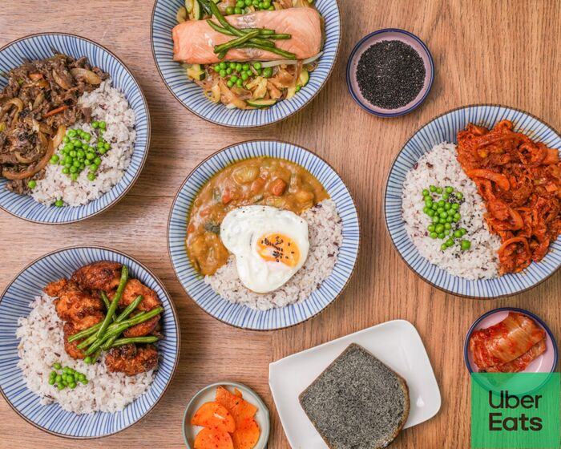
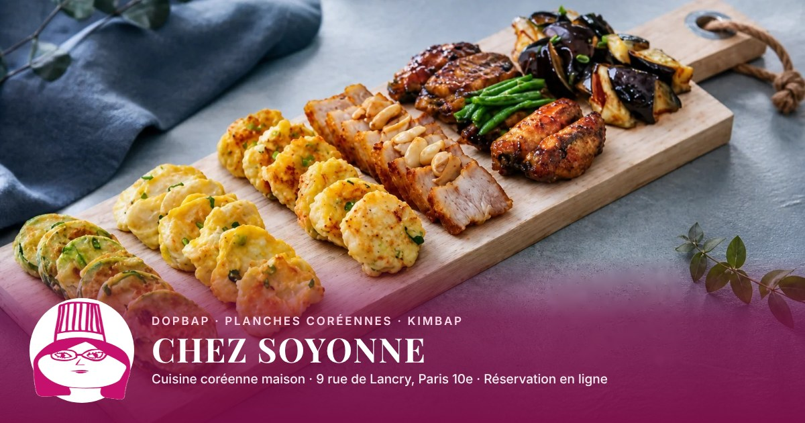

9 Rue de Lancry 75010 PARIS - Bienvenue au CHEZ SOYONNE 소연이네 a PARIS . Nous avons hâte de vous accueillir.
Lien partagé sur WhatsApp

CHEZ SOYONNE 소연이네 cuisine coreenne - PARIS | Korean cuisine near me…9 Rue de Lancry 75010 PARIS - Bienvenue au CHEZ SOYONNE 소연이네 a PARIS . Nous avons hâte de vous…chez-soyonne.eatbu.com
Ce que lisent Google et les IA
✕Titre en majuscules, mélange français / anglais, sans accents (« coreenne »)
✕Description vide : seulement l'adresse et « Nous avons hâte de vous accueillir »
✕Image de partage avec le logo Uber Eats : la pub d'un autre sur leur propre lien
✕Carte en images (menus du midi, du soir, kimbap) : illisible pour Google et les IA
✕Aucun prix lisible
✕Aucun horaire indiqué (« We are closed »)
✕Aucune donnée structurée pour Google (type de cuisine, carte, réservation)
Dopbap, bols de riz coréens faits maison avec des produits frais. Planches à partager le week-end, kimbap, ateliers cuisine. 9 rue de Lancry, Paris 10e.
Lien partagé sur WhatsApp

Chez Soyonne · Cuisine coréenne maison · Paris 10eDopbap, bols de riz coréens faits maison avec des produits frais. Planches à partager le week-end,…soyonne.beltab.app
Ce que lisent Google et les IA
✓Titre clair : nom, cuisine, quartier
✓Description qui dit ce qu'on mange : dopbap, planches, kimbap, ateliers
✓Image de partage à leurs couleurs, avec leur plat et leur logo
✓Toute la carte en texte : chaque plat, sa description et son prix
✓Horaires, adresse, téléphone lus par Google et les IA
✓Données structurées : restaurant coréen, carte, réservation en ligne
✓Résumé dédié aux IA (ChatGPT, Perplexity…) : « où manger coréen à Paris 10e ? »